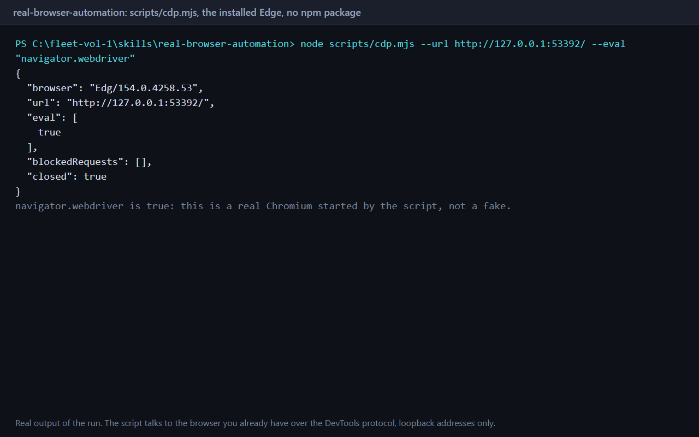

<div class="glow"></div>
<div class="win w1"><div class="bar"><span class="dot"></span><span class="dot ok-dot"></span><span class="tname">pwsh-for-bash-writers</span></div><div class="vp vp1"></div></div>
<div class="win w2"><div class="bar"><span class="dot"></span><span class="dot ok-dot"></span><span class="tname">real-browser-automation</span></div><div class="vp vp2"></div></div>
<div class="strip"><span>pwsh-for-bash-writers</span><span>real-browser-automation</span><span>bevy-rust-ecs</span></div>
